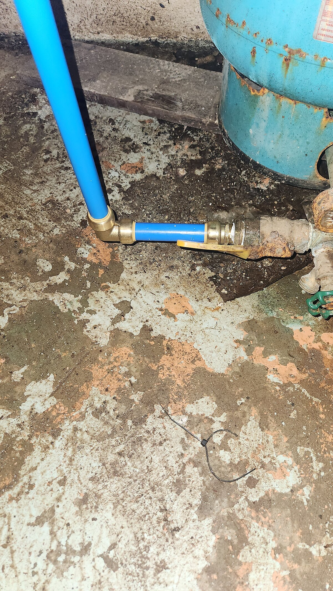
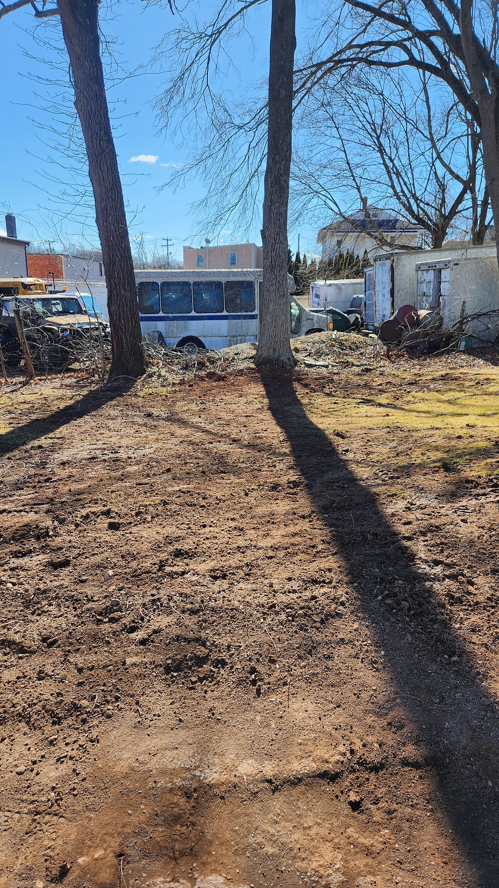
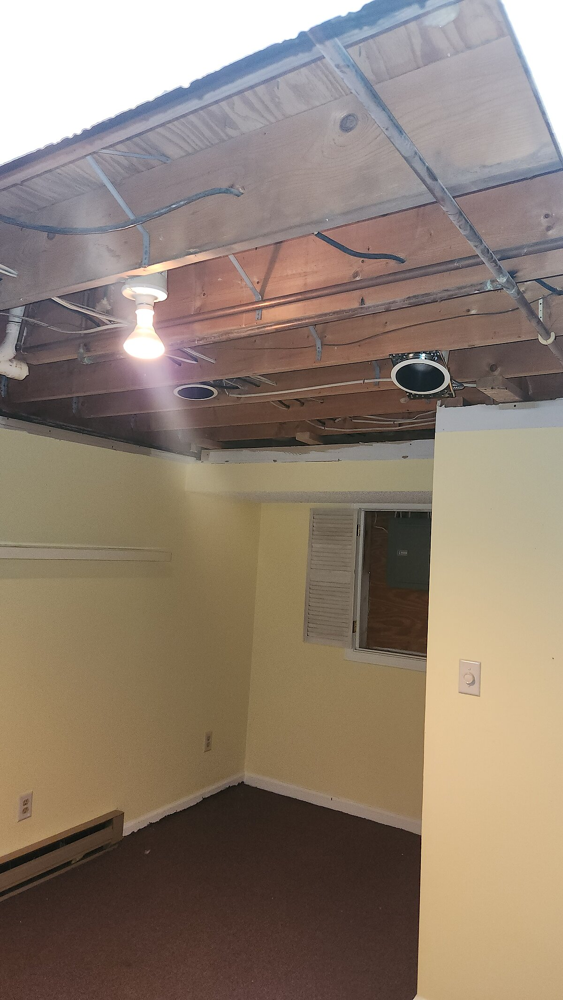
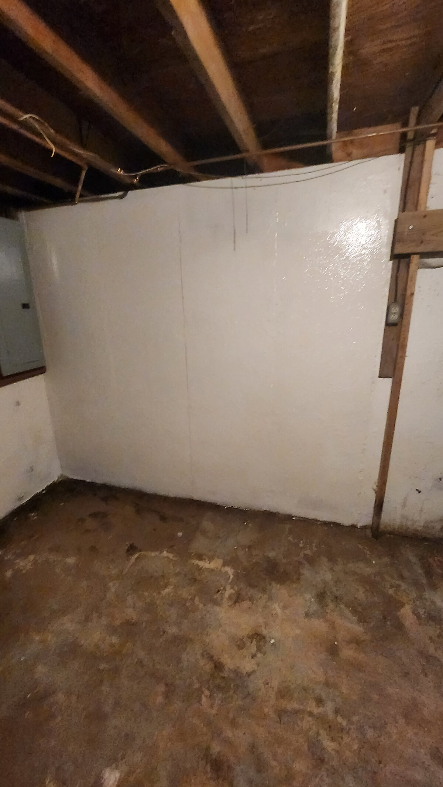
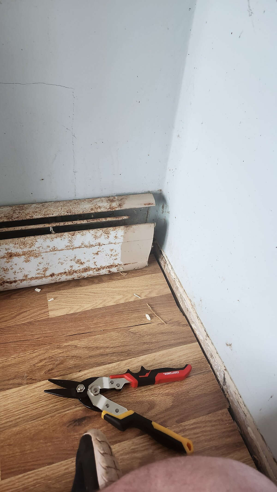
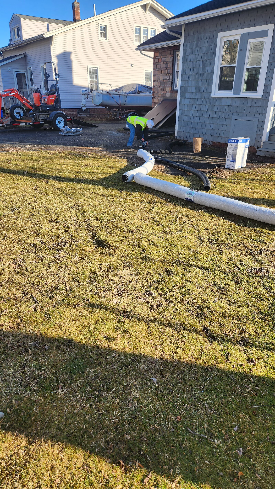

Pre-Claim Construction & Repair Estimate
A free, builder-led damage assessment with an itemized repair scope — offered upon request, subject to schedule availability.
Request Your Free EvaluationWhen your home has storm, water, fire, or impact damage, knowing the real scope and cost of repair before you file a claim puts you in a stronger position. Restoricon, LLC provides a professional, builder-led assessment — documented, itemized, and delivered directly to you — so you know exactly what needs to happen next.
What We Inspect

Interior Damage
- Water leaks & plumbing bursts
- Fire & smoke damage
- Dry rot & moisture intrusion
- Structural ceiling & floor joist integrity

Exterior Damage
- Vehicle impact & fallen trees
- Ice dams & roof/siding storm damage
- Drainage, grading & framing damage
What You'll Receive
A structured, documented deliverable — not just a verbal opinion. Below is a sample layout of what your report package includes.
Summary of Findings
Comprehensive interior and exterior walkthrough with high-resolution photo documentation of all observed damage, keyed to the itemized scope below.
Sample layout for illustration — actual reports are prepared per property.
| Item | Qty | Description |
|---|---|---|
| R&R | 32 SQ | Roofing — wind/storm damage |
| R&R | 140 SF | Drywall — water damaged ceiling |
| Detach & Reset | 1 EA | Kitchen cabinetry — plumbing access |
| R&R | 18 LF | Baseboard trim — moisture damaged |
Sample layout for illustration — actual line items reflect real Xactimate® pricing.
Our 5-Step Compliant Process
1. Comprehensive Property Evaluation
An on-site interior and exterior walkthrough with high-resolution photo documentation of every area affected — so nothing gets missed or left out of the scope.

2. Xactimate® Line-Item Estimate
An itemized scope mapping real labor costs, material requirements, and current Connecticut building codes — the same estimating standard insurance carriers use.

3. Professional Scope Report
A complete construction damage report, delivered directly to you — documented findings, photos, and the itemized estimate in one package.

4. On-Site Field Verification
We meet your insurance carrier's field adjuster on-site to verify physical damage and construction realities firsthand, so nothing gets lost in translation.

5. Quality Reconstruction
Once scope and pricing are finalized, we execute a standard Connecticut Home Improvement Contract to complete the repair — the same structured process as every Restoricon project.
Compliance & Legal Disclosures
Public Adjusting Disclaimer
Restoricon, LLC is a licensed General Contractor (CT HIC). We write physical construction repair estimates and document building code requirements. We are not Public Adjusters and do not negotiate insurance policy coverages, argue legal claims, or offer legal representation.
Deductible Law Notice
In accordance with state law, homeowners are strictly responsible for paying their insurance policy deductible. We do not waive, rebate, or absorb insurance deductibles.
Ready to Request Your Free Evaluation?
Offered 100% free upon request and subject to schedule availability. Call (860) 337-1820, email contact@restoricon.com, or request a consultation below.
Request Your Free Evaluation